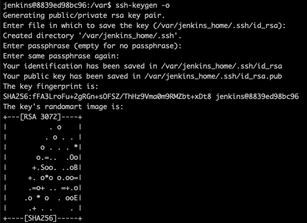
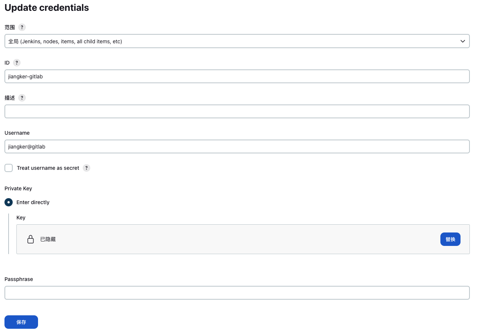
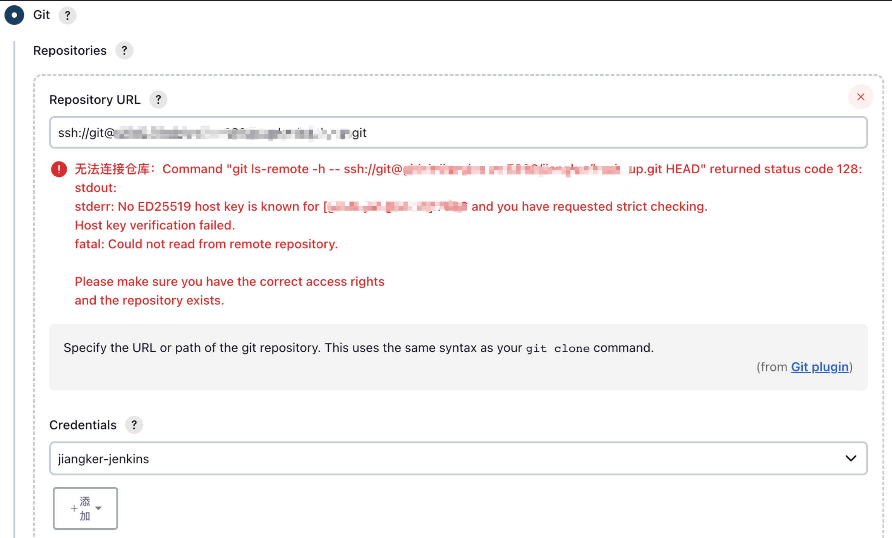
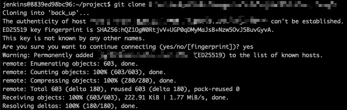
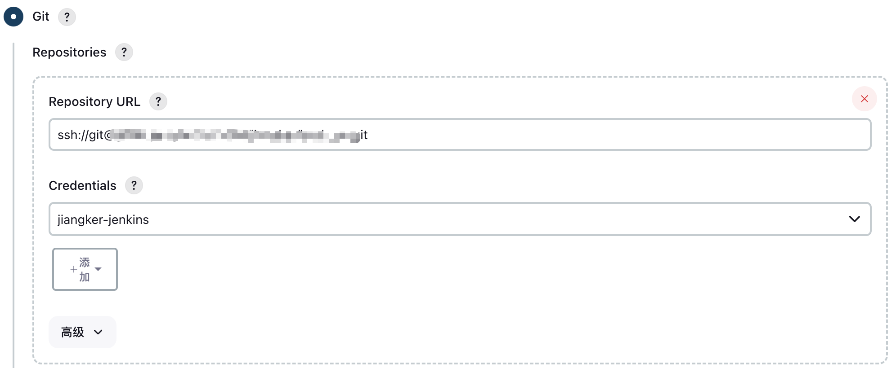
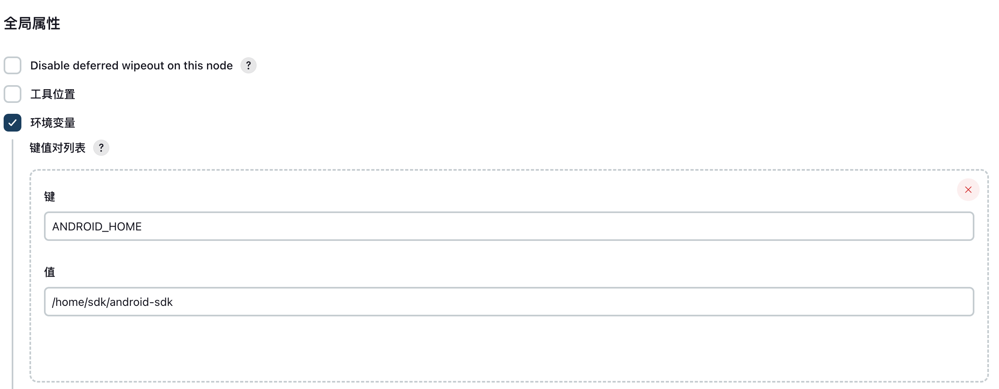
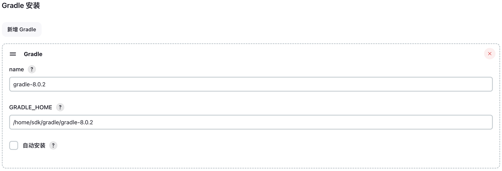
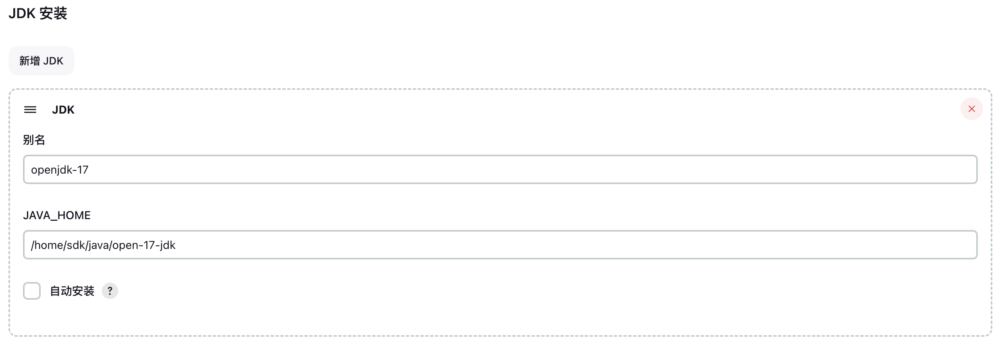

Jenkins安装
一般情况Jenkins的安装都是使用docker-compose，在文件中把环境配置都创建好，但是unraid中不能使用compose，所以为了保持一致性，需要自己手动配置相关环境。 注意此处映射的路径需要是有所有权限的，可以通过设置
1
chmod 777 Jenkins
运行镜像相关的配置，默认直接在app市场搜索，然后就行一点小修改即可。
1
2
3
4
5
6
7
8
9
10
11
12
13
14
docker run
-d
--name='Jenkins'
--net='bridge'
--privileged=true
-e TZ="Asia/Shanghai"
-e HOST_OS="Unraid"
-e HOST_HOSTNAME="root"
-e HOST_CONTAINERNAME="Jenkins"
-l net.unraid.docker.managed=dockerman
-l net.unraid.docker.webui='http://[IP]:[PORT:9999]/'
-l net.unraid.docker.icon='https://raw.githubusercontent.com/selfhosters/unRAID-CA-templates/master/templates/img/jenkins.png'
-p '9999:8080/tcp'
-v '/mnt/user/appdata/Jenkins':'/var/jenkins_home':'rw' 'jenkins/jenkins:2.414.1-lts-jdk17'
这里只映射了一个映射路径，计划是把sdk相关的配置都放入到此目录下。镜像也选择官方的最新镜像，但因为需要使用Android commandlinetools来配置Android SDK，并且最新的commandlinetools依赖jdk17，所以我这里直接使用的建立在jdk17环境上的镜像，若采用默认镜像，可能是jdk11，此时需要自己配置一下默认的jdk环境。
Root用户配置
因为需要涉及到一些编辑，所以优先使用root用户就行登陆，然后进行部分内容的安装。
宿主主机登陆Jenkins容器Root用户
1
docker exec -it -u root Jenkins /bin/bash
更新
1
apt-get update
安装wget和vim
1
apt-get install wget vim -y
SDK相关安装配置
在默认用户下安装剩下的配置，因为默认用户根目录为/var/jenkins_home，即我们的映射过的目录。大致需要安装的sdk路径关系如下
1
2
3
4
5
6
7
8
9
~
├─sdk
| ├─jdk
| | └─jdk17
| ├─android-sdk
| | └cmdline-tools
| ├─gradle
| | ├─gradle8.0.0
| | └─gradle8.1.0
宿主主机登陆Jenkins容器默认用户
1
docker exec -it Jenkins /bin/bash
ssh配置
因为Jenkins安装默认插件时自动带有git，所以我们直接配置ssh密钥就可以了
1
ssh-keygen -o
一路yes生成密钥，

在gitlab上添加pub key
1
cat ~/.ssh/id_rsa.pub
然后添加私钥到Jenkins中(系统管理->凭证管理->凭证->系统->全局凭证)，选择Add Credentials添加凭证，选择SSH private key，然后把私钥直接填入对应输入框。其余id名字任意填写即可，填写过后如图。
1
cat ~/.ssh/id_rsa

但此次设置完成后，在构建节点中如果要直接去使用的话，得首先进行host认证，可以先进行一次代码的拉取。否则会出现

拉取代码认证如图

在构建任务中可以直接进行选择了

安装安卓编译环境
首先进入到用户目录，然后创建sdk文件夹、android-sdk文件夹，然后进入对应目录
1
2
3
4
5
cd ~
mkdir sdk
cd sdk
mkdir android-sdk
cd android-sdk
Android commandlinetools可以在下载地址最下面的Command line tools only找到，这里下载Linux版本的。
1
wget https://dl.google.com/android/repository/commandlinetools-linux-10406996_latest.zip
解压对应文件，然后需要移动解压出来的文件到其子目录下,结果如下：
1
2
3
4
5
6
7
~/sdk/android-sdk
├─cmdline-tools
| ├─lasted
| | ├─bin/
| | ├─lib/
| | ├─source.properties
| | └─NOTICE.txt
1
2
3
4
unzip -o commandlinetools-linux-10406996_latest.zip
cd cmdline-tools
mkdir lasted
mv NOTICE.txt bin/ lib/ source.properties lasted/
同意条款，此次需要运行在jdk17上
1
2
cd lasted/bin
./sdkmanager --licenses
一路y直到完成，然后在Jenkins的系统管理->系统配置中的全局熟悉下添加环境变量

安装gradle
在gradle目录下下载需要的sdk，可以在下载地址 选择需要的版本，下载解压即可
1
2
wget https://services.gradle.org/distributions/gradle-8.0-bin.zip
unzip -o gradle-8.0-bin.zip
然后在Jenkins的系统管理->全局工具配置的gradle配置下，添加对应的gradle版本。

安装java环境
和gradle类似，下载解压对应的jdk即可。
1
2
wget https://download.oracle.com/java/17/archive/jdk-17.0.8_linux-x64_bin.tar.gz
tar -zxvf jdk-17.0.8_linux-x64_bin.tar.gz
同样在Jenkins的系统管理->全局工具配置的jdk配置下，添加对应jdk
